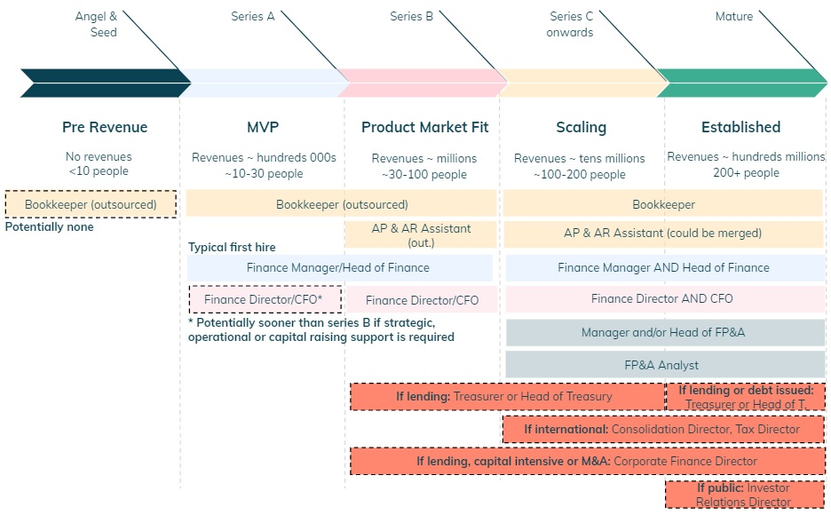

Summary
This note goes through how Finance adds value to a startup and how a finance team should be structured from a very early stage at seed level, across all stages of development (series A, B, C), up until becoming a mature company.
Feedback Loop
The purpose of a startup is to embark on a journey to achieve a vision.
I have come to realise that Finance’s key purpose is to partner with
people to ensure, in a helpful way, that the vision is executed (which is why I love my job).
This is achieved by continuously providing feedback on a company’s trajectory. Actions can then be
discussed across a multi-disciplinary team, to adjust its direction.
By repeating this process, a feedback loop is created,
to ensure either that the company stays on track or if a destination change is
required (e.g. pivot the business so that it is sustainable ahead of scaling).
 Figure 1: Feedback loop established by Finance.
Figure 1: Feedback loop established by Finance.
In a nutshell, it is like driving a car. We need to turn the steering wheel not only to stay on the road, but also to choose our final destination.
Finance Pillar #3: Spotless numbers
The question then becomes, how can finance provide feedback?
Firstly, we need numbers for the past (financial reporting) to assess the current trajectory and
for the future (financial planning and analysis or “FP&A”) to see where we are
likely heading to.
 Figure 2: Spotless numbers.
Figure 2: Spotless numbers.
Finance Pillar #2: Think Broadly
If the key goal is to partner with people and provide feedback, then the next pillar is to have enough time to think about what the numbers are saying and provide insights. This should be done not just from a finance perspective, but also taking into account the perspective of other teams.
 Figure 3: Think broadly.
Figure 3: Think broadly.
Finance Pillar #1: Collaborate
Finally, after numbers are produced and the thinking is done,
it is necessary to engage with people to steer the business trajectory.
We need to turn the wheel.
This is something like the control room below. The coordinated motion (actions) of every single wheel (team) will determine the final trajectory.
Figure 4a: German Submarine, UB-110 (source: Wikimedia Commons).My Three Finance Pillars
Putting everything together, I have come up with the below to help me think about the big picture and prioritise what Finance should be doing.
Figure 5: My Three pillars.
From a value creation perspective, pillar #1 is where Finance should spend most of its time.
If it is instead spending >50% of their time producing numbers (pillar #3)
there is something wrong.
The key issue that I have encountered is that there is a lot of pressure to spend most of the
time producing numbers. This is a mainly a consequence of:
- manual tasks and processes,
- using Excel (data in a file is isolated) instead of Google sheets (easy to move data around) and
- not having a proper end-to-end technology stack to support Finance processes (there is more than just Xero).
Team of Teams
For coordination to happen across teams, there needs to be information flow across the business and a company wide view (no silos...). If every team is using, independently, data specific to them and not sharing it with others, it is impossible to have a group wide view and coordinate actions that are interdependent.
Figure 6: Uncoordinated information flow.If finance is instead at the epicentre of data, it can coordinate the information flow and create a company wide view. It can thus add a lot of value by providing feedback on the current trajectory and managing the overall process across teams to determine actions and achieve goals.
Figure 7: Team of Teams.This increases the interconnectedness across teams and makes a startup much more adaptable to overcome challenges. A team of teams is created (see book with the same title), as each team is able to:
- Have a very clear view of that is ultimate goal for the Company
- Understand how their actions contribute for a setting specific trajectory
- Adjust quickly their actions based on feedback
- Coordinate with other teams whenever their actions impact them
Thinking vs Doing
The processes of a finance team are organised across two dimensions: time and execution.
Figure 8: Finance Dimensions.- Time: there are people mostly focused on the past (financial reporting), others focused on the future (financial planning) and someone that will need to wear both hats (#1 finance person).
- Execution: the #1 finance person should be mostly thinking
(pillar #2) and collaborating with the rest of the business (pillar #1). The time
spent on pillar #3 (doing numbers) should be minimal. It should have a team of
direct reports, working as a layer between thinking and executing. These in turn
should be supported by people that are mostly focused on day to day tasks.
Key Finance Tasks
From a tasks perspective, each bucket can then be organised as below.
Figure 9: Finance Key Tasks- Think
- Company Vision: collaborate with founders, board and raise capital
- Business Strategy: collaborate with leadership team and manage finance team
- Relationships: partner with stakeholders (internal & external) to create value
- Governance: set up controls and enhance efficiency to create value
- Execute/Think
- Financial Reporting: statutory, annual audited accounts and investor reporting, tax
- Month end: produce management accounts, VAT reports
- Financial Planning: annual budget, forecasting & modelling
- Commercial and Business: support commercial execution and business
- Execute
- Accounts Receivable: chase invoices for inflows (revenues)
- Accounts Payable: pay invoices/other for outflows (costs)
Key Finance Roles
The figure below shows the mapping of finance roles across time and execution for a mature company. Further details of what each role entails will be discussed further down.
 Figure 10: Mapping of Finance Roles.
Figure 10: Mapping of Finance Roles.
Over the life of a startup, a finance team will be structured as follows.
 Figure 11: Finance Team Structure over the life of a startup.
A finance team starts with backward looking capabilities for day-to day tasks
relating to bookkeeping, it then progresses to financial reporting with the hire
of a Finance Manager (or Head of Finance). Once a Finance Director or CFO is hired (typically
series B but could be sooner), the next step is to build forward looking capabilities
relating to FP&A.
The roles in red are more typically for large and established companies,
although a need to hire for these roles may appear sooner under certain circumstances (e.g.
international scale up or lending business).
Key Roles For an Angel or Pre-Seed Startup
At this stage, the startup has no minimum viable product (MVP)
yet and therefore no revenues. Headcount is likely 10 people or less.
The finance needs are thus minimal (mainly payroll costs), one can consider to outsource the bookkeeping if this is required.
- Bookkeepers: these people are responsible for building the financial
statements using debits and credits by matching invoices to either cash inflows
(accounts receivable from clients) or cash outflows (accounts payable to suppliers).
They ensure that everything is booked into the right account, in the chart of accounts (building blocks for
financial statements).
This is typically outsourced as there is not enough work to justify a full time position. - Finance Manager: this is someone with a backward
looking profile, with or without an accounting qualification. It is the natural first hire in a finance team, unless there is a
sense of urgency to build a finance team & processes or getting financial
planning skills, in which case it makes sense to get a Finance Director/CFO on
fractional basis (or full time) to help.
- Head of Finance: similar to a Finance Manager but
more experienced. It is likely a post qualified person (but not always) and ideally would have some FP&A capabilities.
This hire is typical for a B startup but could be done sooner at series A, instead of a Finance Manager hire. - Finance Director or CFO: This is the broadest role possible,
with responsibilities split between managing a Finance team, collaborating with people across
the business and liaising with external stakeholders such as board, debt and equity investors,
investment banks, law firms, rating agencies and regulators.
- This is a hire from series B onwards but it could make sense to do it from series A on a fractional basis (or full time), if there is a significant need to put together business plans, work through equity story, support or lead capital raising and build a Finance department from scratch.
- AR or AP Assistant: responsible for chasing invoices due
from clients (accounts receivable) or paying invoices to suppliers (accounts payable),
would likely be outsourced at this stage.
- This hire is typical for a series B (part-time or outsourced) or series C (full-time) startup.
- Treasurer/Head of Treasurer: these roles only make sense if the company has issued a significant amount of debt or if there is a lending component to the business model. They mainly focus on cash flows, risk management (debt, hedging and other) and potentially leading or supporting capital raises.
- Corporate Finance Director: this role only makes sense if the company has an ongoing need to raise capital as part of the business strategy (e.g M&A), business model (e.g. lending) or capital intensive industries (e.g. hardware). They mainly focus on leading or supporting capital raises and M&A.
- Consolidation Director: only relevant with expansion across several countries. This is a function used to combine the financial statements of each individual country, in order to provide a group wide view.
- Tax director: mostly mature companies, with expansion across several countries. This is a function used to structure cash circulation and transfer pricing for intra-group transactions, as well as to optimise tax liabilities.
- Investor Relations: mostly mature companies that are either public or have issued a considerable amount of debt. This role entails keeping strong relations with investors, prepare quarterly investor reporting and liaise internally (if necessary) to answer questions to investors.
Key Roles For a Series A Startup
The startup now has a minimum viable product (MVP), potentially some revenues and
it probably has 10-30 people.
The finance needs are mainly backward looking relating financial reporting and month end.
 Figure 13: Finance for a Series A startup.
Figure 13: Finance for a Series A startup.
Key Roles For a Series B Startup
The startup is now looking for Product Market Fit, revenues are in the millions and it
probably has 30-100 people.
The finance needs include strategy, capital raising, financial planning and there will likely
be a need for someone to deal with Accounts Payable (suppliers) and Accounts
Receivable (clients) although not full time.
A key point to bear in mind, is that before proceeding to the scale
up/series C stage, it is of paramount importance to ensure that the business model has
sustainable unit economics. Otherwise the problem will become much harder to
solve in the scale up phase. It is thus important to get the support of Finance Director or CFO to make sure this happens.
 Figure 14: Finance for a Series B startup
Figure 14: Finance for a Series B startup
Key Roles For a Series C Startup
The startup is now looking to scale up, revenues are in the millions and it probably
has 100-200 people.
The finance needs are all about diversity in skills and adding additional capacity either in financial
reporting or financial planning, which typically means more layers within the
team and specialisation. For example, there could be a Finance Director reporting to the CFO,
a Head of Finance and a Head of FP&A and several managers or analysts. It would also make sense
to start bringing in house anything that was outsourced until then (bookkeeping, AP and AR).
 Figure 15: Finance for a Series C startup
Figure 15: Finance for a Series C startup
Key Roles For a Mature Company
The startup is now mature, revenues in the hundreds of millions or and probably has 200+ people.
Most people will focus their time in one quadrant and it is up to the most
senior finance professionals to have an overall view of the team and business.
Depending on how the company developed geographically, it could make
sense to have this type of structure at a country level (excluding Consolidation,
Corporate Finance, IR and Tax).
When I worked at Altice (worldwide telecoms hyper growth scale up)
this was the structure in place.
If I can be helpful on anything, or if you have any comments or suggestions,
please do reach out: